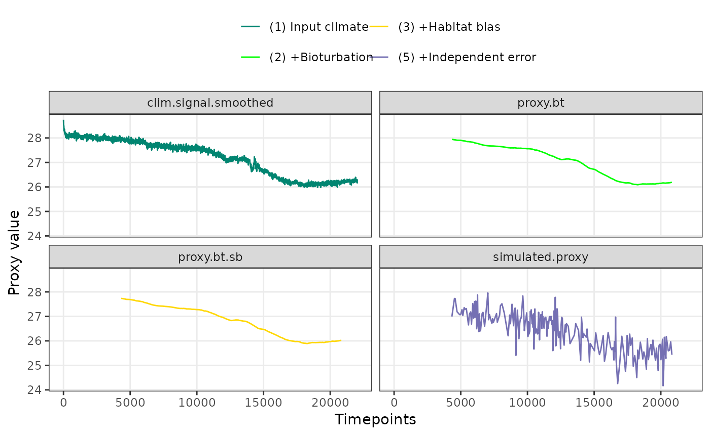
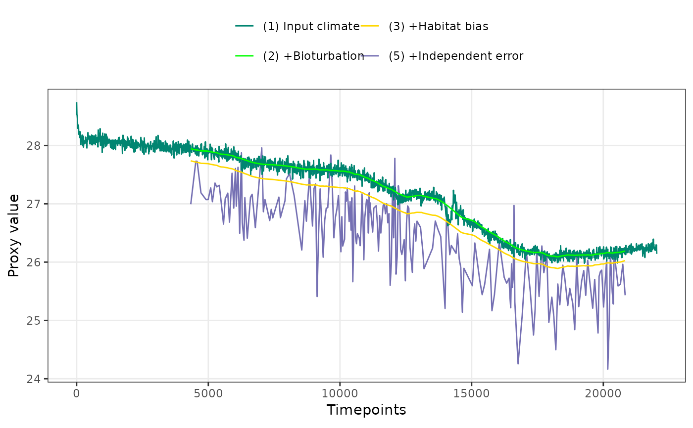
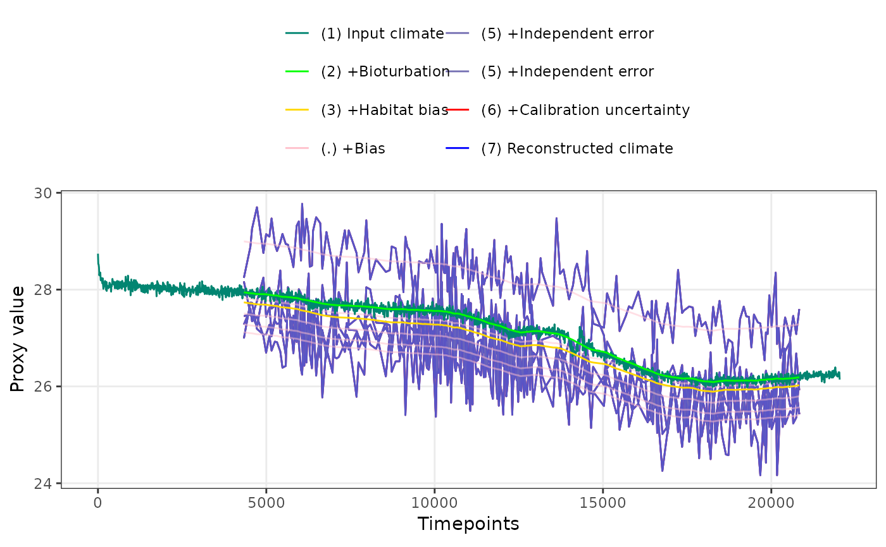

Plot forward modelled sedimentary proxies
Arguments
- PFMs
A dataframe of forward modelled proxies
- stage.order
Controls the order in which proxy stages are plotted, either sequentially, "seq", or in order of variance, "var". Defaults to var.
- plot.stages
Proxy stages to be plotted, "default", "all", or a custom character vector
- max.replicates
Maximum number of replicates to plot at once
- colr.palette
Colours for the proxy stages
- alpha.palette
Alpha levels for the proxy stages
- levl.labels
Labels for the proxy stages
Examples
library(ggplot2)
set.seed(26052017)
clim.in <- ts(N41.t21k.climate[nrow(N41.t21k.climate):1,] - 273.15)
PFM <- ClimToProxyClim(clim.signal = clim.in,
timepoints = round(N41.proxy$Published.age),
calibration.type = "identity",
habitat.weights = N41.G.ruber.seasonality,
sed.acc.rate = N41.proxy$Sed.acc.rate.cm.ka,
sigma.meas = 0.45,
sigma.ind = 0,
n.samples = Inf,
plot.sig.res = 10, meas.bias = 1,
n.replicates = 10)
PlotPFMs(PFM$everything, max.replicates = 1, stage.order = "seq") +
facet_wrap(~stage)
#> Joining with `by = join_by(stage, scale)`
#> Scale for alpha is already present.
#> Adding another scale for alpha, which will replace the existing scale.

PlotPFMs(PFM$everything, max.replicates = 1, stage.order = "var")
#> Joining with `by = join_by(stage, scale)`
#> Scale for alpha is already present.
#> Adding another scale for alpha, which will replace the existing scale.

PlotPFMs(PFM$everything, stage.order = "var", plot.stages = "all")
#> Joining with `by = join_by(stage, scale)`
#> Scale for alpha is already present.
#> Adding another scale for alpha, which will replace the existing scale.
